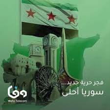
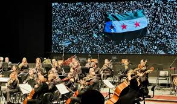
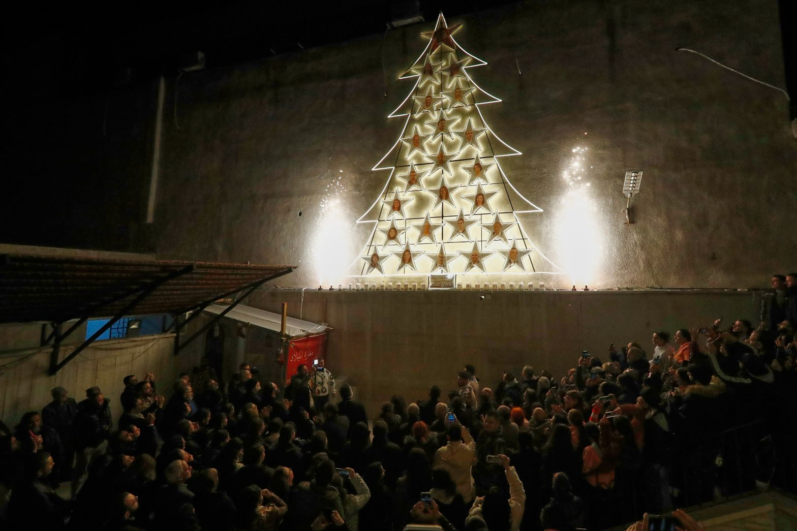
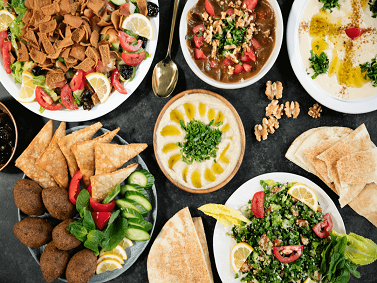
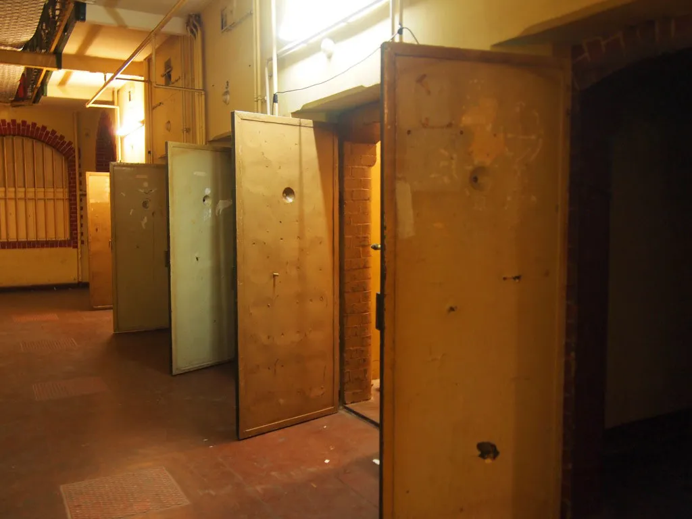
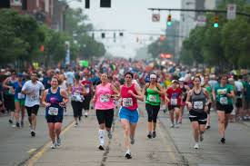
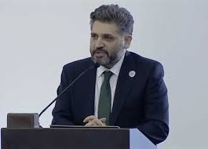
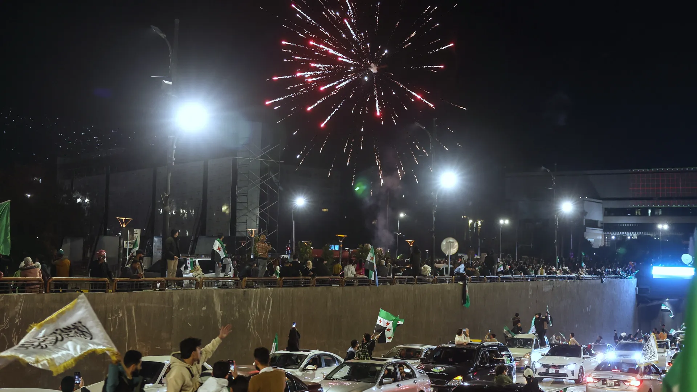
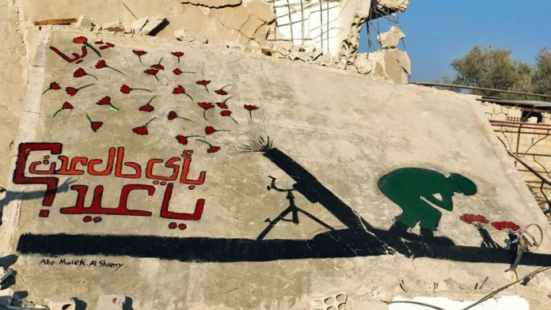

Dawn of Freedom Carnival
08/12/2025 – 03:00 PM → 06:00 PM
Abbasiyin Square → Umayyad Square
Cultural Event
A massive public parade featuring musical bands, decorated floats, and national celebration.
More Details...
08/12/2025 – 03:00 PM → 06:00 PM
Abbasiyin Square → Umayyad Square
Cultural Event
A massive public parade featuring musical bands, decorated floats, and national celebration.
More Details...
08/12/2025 – 08:00 PM → 10:30 PM
Damascus Opera House
Musical Event
Epic artistic work blending orchestral music with contemporary dance.
More Details...
15/12/2025 – 06:00 PM → 08:00 PM
Bab Touma Square
Familial Event
Lighting the largest Christmas tree with revolutionary colors and community celebration.
More Details...
18/12/2025 – 12:00 PM → 22/12/2025
Abu Rummaneh Street
Cultural Event
Open market celebrating Syrian cuisine from Aleppo to Daraa.
More Details...
26/12/2025 – 10:00 AM → 30/12/2025
Mezzeh Prison Museum
Cultural Event
Art exhibition documenting detainees’ stories and sacrifices.
More Details...
28/12/2025 – 08:00 AM → 12:00 PM
Damascus Airport Road
Sports Event
A mass sporting event symbolizing hope, vitality, and freedom.
More Details...
30/12/2025 – 07:00 PM → 09:00 PM
Tekkiye Suleymaniye
Cultural Event
Literary evening gathering Syrian poets returning from exile.
More Details...
31/12/2025 – 09:00 PM → 01/01/2026
Mount Qasioun Summit
Familial Event
Massive fireworks covering Damascus celebrating the first free New Year.
More Details...
12/12/2025 → 14/12/2025
Al-Kindi Cinema & Al-Mutanabbi Street
Cultural Event
Screening revolutionary short films shot by Syrian youth.
More Details...
20/12/2025 – 09:00 AM → 21/12/2025
Umayyad Square Tunnel
Cultural Event
Syrian graffiti artists painting murals symbolizing liberation.
More Details...